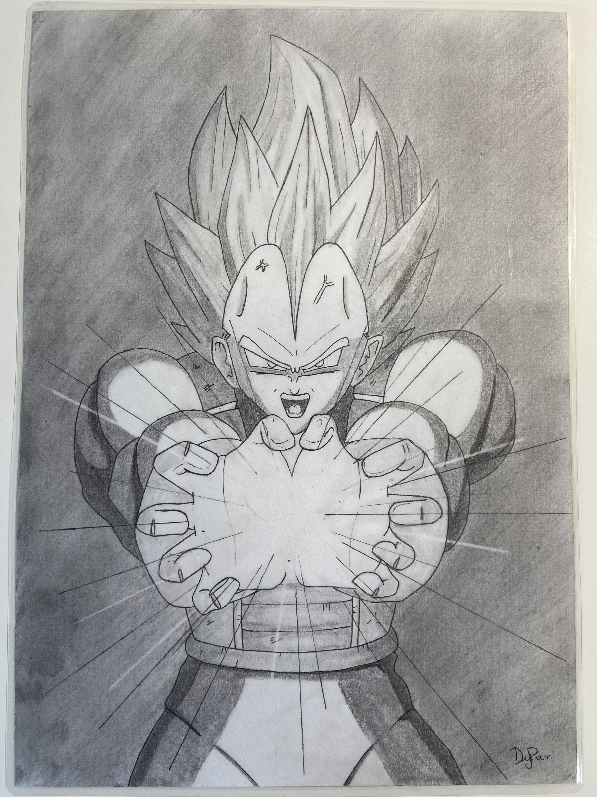
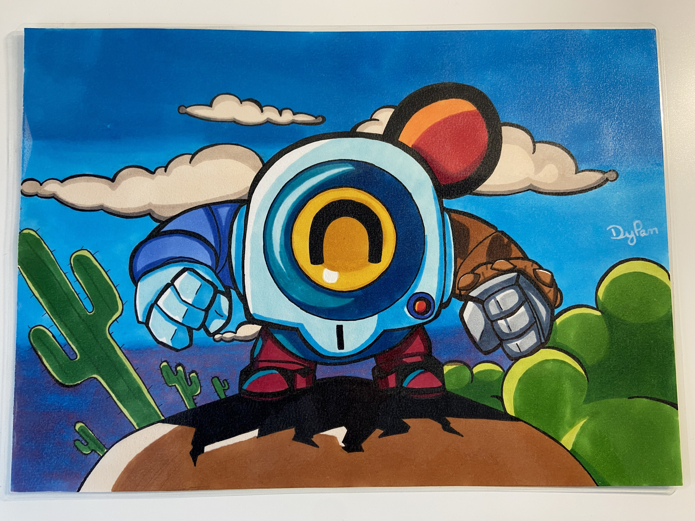
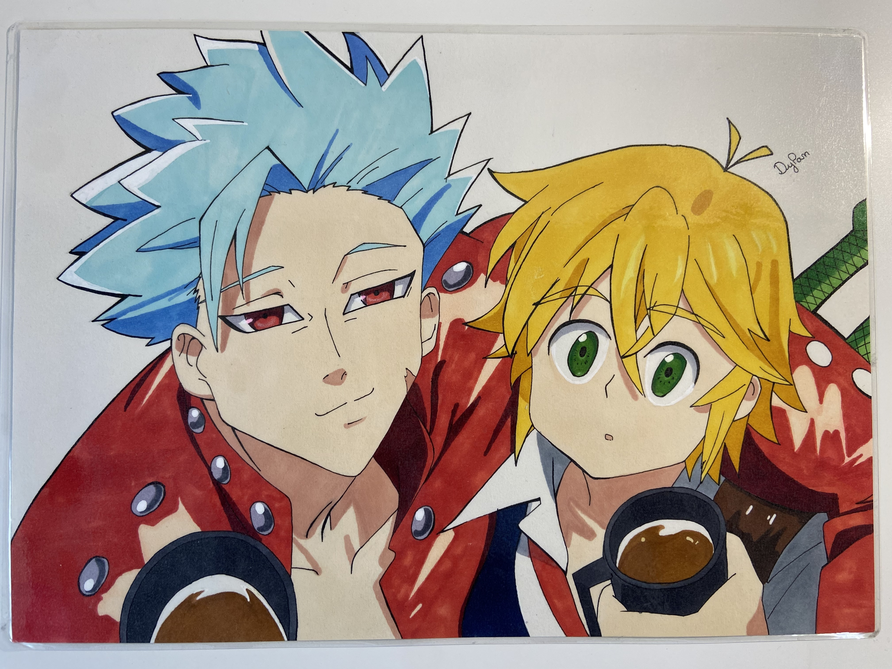
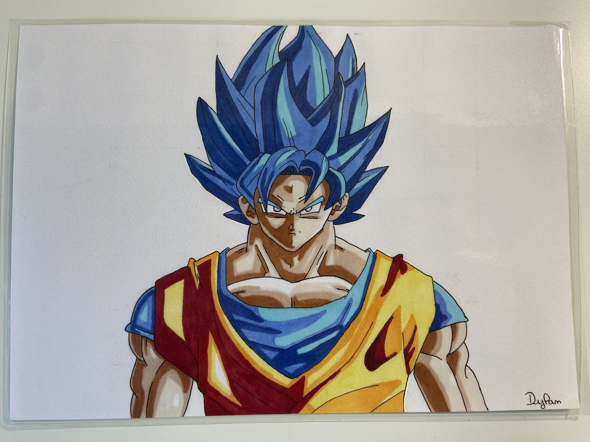
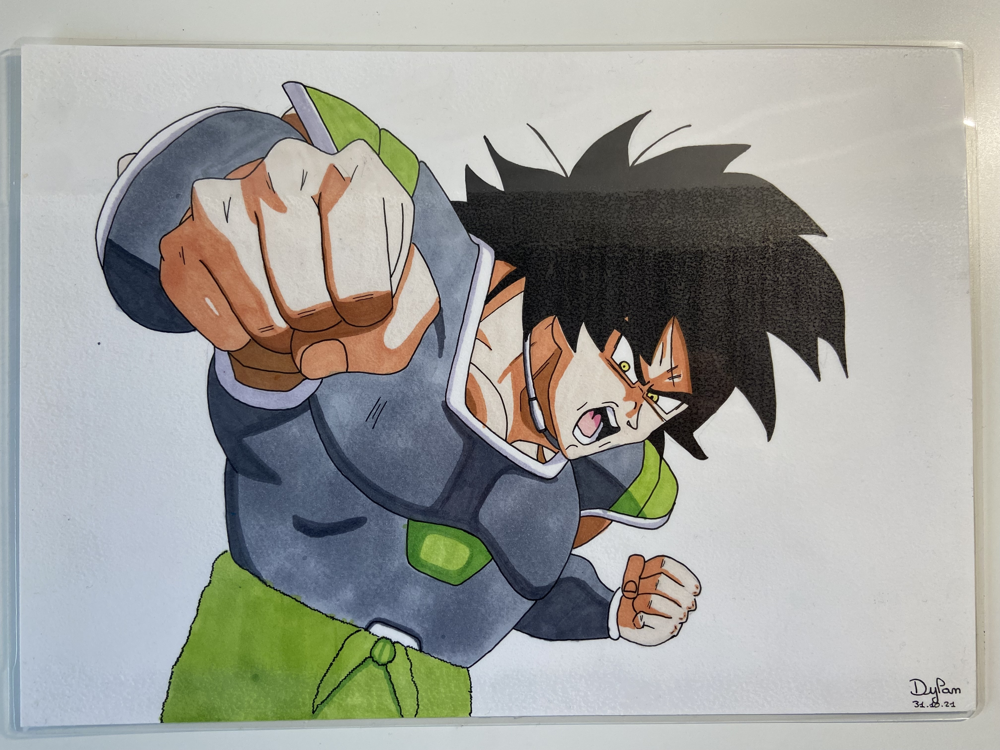
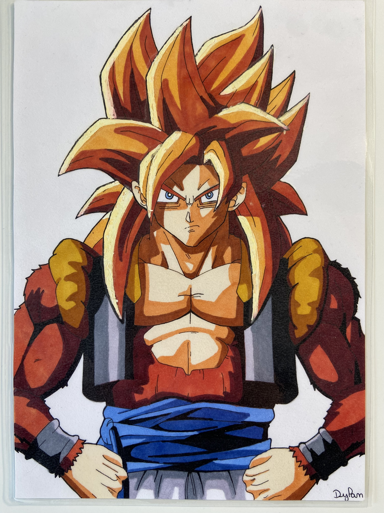
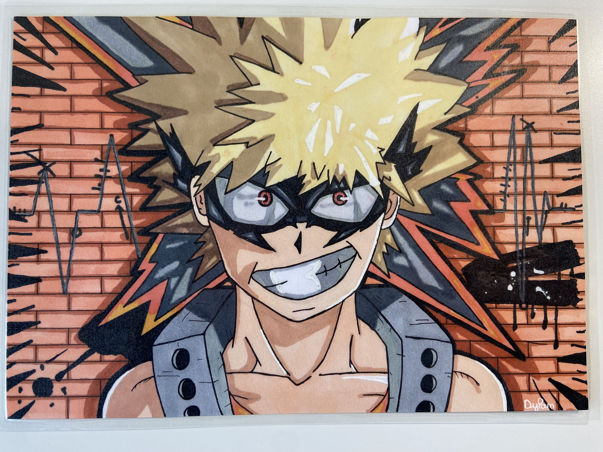

Le dessin a toujours été une de mes passions. Dès mon plus jeune âge, j'aimais prendre un crayon et laisser libre cours à mon imagination.
C'est une passion qui m'a permis d'explorer ma créativité et d'exprimer mes idées de manière visuelle. J'aimais passer des heures à dessiner, à peaufiner des détails, que ce soit à travers des croquis rapides ou des dessins plus aboutis. Le dessin me permettait de me déconnecter du quotidien.
Cette passion m'a permis de développer un esprit créatif que je n'avais pas avant. Même si je dessine moins qu'avant, c'est toujours quelque chose qui m'intéresse beaucoup.
Retrouvez ci-dessous quelques illustrations que j'ai réalisées :






